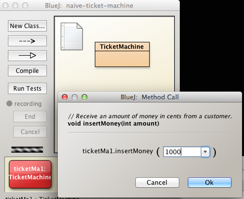
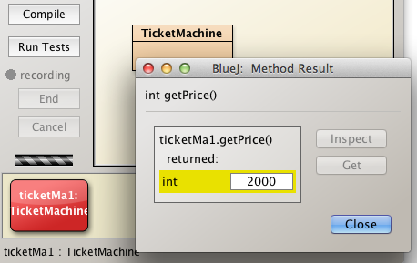

Solutions
Solutions to the exercise set are provided here.
Exercise 1
- Write an accessor for the TicketMachine field int total.
- The signature (including return type) should be int getTotal().
- Compile and test the method:
- Create a TicketMachine object for a 250 cents ticket.
- Insert 1000 cents.
- Use getTotal to verify that the total attribute value is correct.
- Print 2 tickets
- Verify that the total is correct subsequently.
- Print 2 further tickets
- Check total
- Check balance
- Do you think a mutator for this field (balance) would be inappropriate?
Solution
Open ticket-master project completed to the end of the lab.
- An archive of the project is available here.
Accessor
Write an accessor for the TicketMachine field int total:
- The signature should be int getTotal().
Here is the accessor for the field int total:
/**
* @return total the total amout of money collected by this machine
*/
public int getTotal()
{
return total;
}Compile and test
Compile TicketMachine following addition of getTotal accessor.
Create a TicketMachine object on the object bench, inserting 250 as parameter.
- See Figure 1.

Right click on TicketMachine object and invoke insertMoney, adding 1000 as parameter (Figure 2).

Check the total.

The returned value is 0.
This is correct because total is the total amout of money collected by this machine and at this time no money has been collected. This is somewhat ambiguous. After all we have inserted 1000 cent. However, the variable total is incremented by the amount of each ticket issued.
Print two tickets and then check the balance.
We inserted 1000 and have now printed two 250 cent tickets so we would expect the balance to be 500.
Invoke getBalance on the TicketMachine object. This reveals the balance as 500 which is what we expected. See Figure 4.

Exercise 2
- Write a method to allow the price of a ticket to be changed.
- Use the signature public void setPrice(int price)
- Use the this keyword within the method.
- Create a TicketMachine object, ticket cost 1000
- Check the price using getPrice method
- Change the ticket price to 2000
- Check the price has been changed by invoking getPrice
Solution
Mutator (setter) setPrice in which the this keyword is used as required.
Here is the mutator setPrice.
/**
* Sets the value of field price representing the cost of a ticket
* @param price the cost of a ticket
*/
public void setPrice(int price)
{
this.price = price;
}By using this in the assignment this.price = price we ensure that the contents of the local variable price are assiged to the instance variable price.
Were we to have written price = price then the contents of the local variable price would simply have been assigned to itself leaving the instance variable unchanged.
TicketMachine instantiation and testing
Instantiate a TicketMachine object with a parameter of 1000 as required. See Figure 1.

Check that the price is 1000 by invoking getPrice on the TicketMachine object.
Change the ticket price to 2000 by invoking setPrice. See Figure 2.

Check the price again and observe it has changed to 2000. See Figure 3.

Exercise 3
- Write a default constructor for TicketMachine
- Set the default price at 1000
- Create a default TicketMachine object on the object bench
- Check the price has been correctly set by invoking getPrice
Solution
Here is the default constructor:
/**
* Constructs a new default TicketMachine object
*/
public TicketMachine()
{
price = 1000;
balance = 0;
total = 0;
}Since there are no parameters there is no requirement to use the this keyword to identify the instance variables within the constructor body.
Instantiate TicketMachine using the newly written default constructor. See Figure 1.

Invoke getPrice on the TicketMachine object.
- Observe it matches the default value assigned in the constructor body, namely 1000.
- See Figure 2.
Exercise 4
- Write a method to simulate removal of all money from the machine.
- Use a method signature public void empty()
- Create a default TicketMachine object
- Check the balance
- Invoke the empty method
- Verify the balance is zero
- Create a TicketMachine object using the original constructor, the overloaded constructor, setting the initial price at 500
- Check the balance
- Insert 1000 into machine
- Check balance again
- Invoke the method empty
- Check the balance is zero.
Solution
Simulate emptying machine
Removal of all money from the machine may be similated by setting the balance to zero.
Here is the method to do this:
/**
* Sets the balance in the TicketMachine object to zero, simulating removal of all money.
*/
public void empty()
{
balance = 0;
}Test using default constructor
Instantiate TicketMachine using default constructor.
- Invoke getBalance.
- As expected the balance is zero. See Figure 1.
Test using overloaded constructor
Instantiate TicketMachine using overloaded constructor and a ticket price of 500.
- Check balance: it should be zero.
- Insert 1000
- Check balance: it should now be 1000.
- Invoke empty method. See Figure 2.
- Check balance: it should be zero.

Exercise 5
- The skeleton code for the Book class has a series of TO-DO instructions.
- The object of this exercise is to write a complete Book class by following the TO-DO instructions and test it.
/**
* A class that maintains information on a book.
* This might form part of a larger application such
* as a library system, for instance.
*
* @author (TO DO: Insert your name here.)
* @version (TO DO: Insert today's date here.)
*/
class Book
{
// The fields
private String author;
private String title;
// TO DO: Add a field to store the ISBN
// TO DO: Add a field to store the cost of the book
/**
* Set the author and title fields when this object
* is constructed.
*/
public Book(String author, String title)
{
//TO DO: set the author and title fields to the contents of
// the passed parameters.
}
/**
* Set the author, title, ISBN and cost fields when this object
* is constructed.
*/
//TO DO: write a second constructor that has four parameters and use
// the data in these parameters to update the instance fields
// Make sure that the cost of the book is greater than zero.
// TO DO: Add a getter method for each instance field (i.e. you
// will write four methods here.
// TO DO: Add a setter method for each instance field (i.e. you
// will write four methods here.
// When writing the setter for the cost field, only update the cost fields
// if the value entered is greater than zero.
}Solution - Code
/**
* A class that maintains information on a book.
* This might form part of a larger application such
* as a library system, for instance.
*
* @author (TO DO: Insert your name here.)
* @version (TO DO: Insert today's date here.)
*/
class Book
{
// The fields
private String author;
private String title;
// COMPLETE: Add a field to store the ISBN
private String ISBN;
// COMPLETE: Add a field to store the cost of the book
private double cost;
/**
* Set the author and title fields when this object
* is constructed.
*/
public Book(String author, String title)
{
//COMPLETE: set the author and title fields to the contents of
// the passed parameters.
this.author = author;
this.title = title;
}
/**
* Set the author, title, ISBN and cost fields when this object
* is constructed.
*/
//COMPELTE: write a second constructor that has four parameters and use
// the data in these parameters to update the instance fields
// Make sure that the cost of the book is greater than zero.
public Book(String author, String title, String ISBN, double cost)
{
this.author = author;
this.title = title;
this.ISBN = ISBN;
if (cost > 0)
{
this.cost = cost;
}
else
{
System.out.println ("Cost must be greater than zero. You entered: " + cost);
}
}
// COMPLETE: Add a getter method for each instance field (i.e. you
// will write four methods here.
public String getAuthor()
{
return author;
}
public String getTitle()
{
return title;
}
public String getISBN()
{
return ISBN;
}
public double getCost()
{
return cost;
}
// COMPLETE: Add a setter method for each instance field (i.e. you
// will write four methods here.
// When writing the setter for the cost field, only update the cost fields
// if the value entered is greater than zero.
public void setAuthor(String author)
{
this.author = author;
}
public void setTitle(String title)
{
this.title = title;
}
public void setISBN(String ISBN)
{
this.ISBN = ISBN;
}
public void setCost(double cost)
{
if (cost > 0)
{
this.cost = cost;
}
else
{
System.out.println ("Cost must be greater than zero. You entered: " + cost);
}
}
}Solution - Test
Test both of the constructors by calling each one in turn. When each object is created, double click on it to display the object state. Did each value that you passed as an argument get successfully updated in the object state? If any of the fields did not get updated correctly, return to your code and see if you can spot the problem and fix it. NOTE: remember to test the check in the cost field...enter a value of 1 (a postitive test - the value should be accepted) and a value of 0 (a negative test - the value should produce a message).
Now that you have created objects, you can test your getter and setter methods. The easiest way to do this is to take each field in turn, call the setter method for it to update the field contents, then check the update worked correctly by calling the getter for the specific field. If you notice a problem with any field, return to your code and see if you can spot the problem and fix it. NOTE: remember to test the if statement for the cost field.
Exercise 6
The object of this exercise is to write a complete USBDrive class based on the following instructions:
- Create a new bluej project called USBDrive in your labs/session02 folder.
- In this project, create a new class called USBDrive.
- This class should have four instance fields:
- make: String //no validation
- capacity: int //must be greater than zero
- colour: String //no validation
- usedSpace: int //must be set to zero upon object creation
- This class should have the following constructors:
- USBDrive()
- USBDrive(String, int, String)
- This class should have the folloiwing methods:
- getMake()
- getCapacity()
- getColour()
- getUsedSpace()
- setUsedSpace() //must be greater than zero; don't default a value.
Solution - Code
/**
* A class that maintains information on a USBDrive.
*
* @author (Siobhan Drohan)
* @version (24/01/2017)
*/
public class USBDrive
{
// The instance fields for a USBDrive object
private String make;
private int capacity; //measured in MB
private String colour;
private int usedSpace;
/**
* Set the fields to a default value when a USBDrive object
* is constructed.
*/
public USBDrive()
{
this.make = "unknown";
this.capacity = 2000;
this.colour = "unknown";
this.usedSpace = 0;
}
/**
* Set the make, capacity, colour fields when this object
* is constructed.
*
* @param make The make of the USB Drive
* @param capacity The capacity, measured in MB, of the USB Drive
* @param colour The colour of the USB Drive
*/
public USBDrive(String make, int capacity, String colour)
{
this.make = make;
this.colour = colour;
this.usedSpace = 0;
if (capacity > 0)
{
this.capacity = capacity;
}
else
{
System.out.println ("Capacity must be greater than zero. Defaulting to 2000 MB");
this.capacity = 2000;
}
}
/**
* The getter method for the instance field, make.
*
* @return the make of the USBDrive
*/
public String getMake()
{
return make;
}
/**
* The getter method for the instance field, colour.
*
* @return the colour of the USBDrive
*/
public String getColour()
{
return colour;
}
/**
* The getter method for the instance field, capacity.
*
* @return the capacity of the USBDrive
*/
public int getCapacity()
{
return capacity;
}
/**
* The getter method for the instance field, usedSpace.
*
* @return the usedSpace of the USBDrive
*/
public int getUsedSpace()
{
return usedSpace;
}
/**
* The setter method for the instance field, usedSpace.
*
* @param usedSpace The new value for the usedSpace field of the USBDrive; it must be greater than zero.
*/
public void setUsedSpace(int usedSpace)
{
if (usedSpace > 0)
{
this.usedSpace = usedSpace;
}
else
{
System.out.println ("Used space must be greater than zero. You entered: " + usedSpace);
}
}
}Solution - Test
Test both of the constructors by calling each one in turn. When each object is created, double click on it to display the object state. Did each value that you passed as an argument get successfully updated in the object state? If any of the fields did not get updated correctly, return to your code and see if you can spot the problem and fix it. NOTE: remember to test the check in the usedSpace field...enter a value of 1 (a postitive test - the value should be accepted) and a value of 0 (a negative test - the value should produce a message).
Now that you have created objects, you can test your getter methods for each field...compare the returned value against the value in the object state window (right click and select the inspect field to display this window).
Test the setter method for usedSpace. Remember to test the check in the usedSpace field...enter a value of 1 (a postitive test - the value should be accepted) and a value of 0 (a negative test - the value should produce a message).
Exercise 7
The object of this exercise is to write a complete Product class based on the following instructions:
- Create a new bluej project called Store in your labs/session02 folder.
In this project, create a new class called Product.
This class should have four instance fields:
- productName: String //no validation
- productCode: int //must be between 1000 and 9999
- unitCost: double // must be greater than 0
- inCurrentProductLine: boolean //no validation
This class should have one constructor taking in values for each of the four instance fields.
This class should have accessor and mutator methods for each instance field.
Enter Javadoc comments for the class. Make sure to use @author and @version.
Enter Javadoc comments for each method. Make sure to use @param and @return, where appropriate.
Solution - Code
/**
* Represents a Product. Stores the product name, product code,
* unitCost and whether the product is in the current product
* line or not.
*
* @author Siobhan Drohan
* @version 1.0 (25th Jan 2017)
*/
public class Product
{
//instance fields
private String productName;
private int productCode;
private double unitCost;
private boolean inCurrentProductLine;
/**
* Constructor for objects of class Product
*
* @param productName Name of the product
* @param productCode Code of the product (between 1000 and 9999)
* @param unitCost Unit cost of the product (greater than zero)
* @param inCurrentProductLine indicates whether the
* product is in the current product line or not
*/
public Product(String productName, int productCode,
double unitCost, boolean inCurrentProductLine)
{
this.productName = productName;
if ((productCode >= 1000) && (productCode <= 9999))
{
this.productCode = productCode;
}
else
{
System.out.println("Product code is not between 1000 and 9999."
+ " Setting a default code of 1.");
this.productCode = 1;
}
if (unitCost > 0)
{
this.unitCost = unitCost;
}
else
{
System.out.println("Unit cost must be greater than zero.");
}
this.inCurrentProductLine = inCurrentProductLine;
}
//-------
//getters
//-------
/**
* Returns the product name for the specified object
*
* @return The Product Name
*/
public String getProductName(){
return productName;
}
/**
* Returns the unit cost for the specified object
*
* @return The Unit Cost
*/
public double getUnitCost(){
return unitCost;
}
/**
* Returns the product code for the specified object
*
* @return The Product Code
*/
public int getProductCode() {
return productCode;
}
/**
* Returns a boolean indicating if the product is in
* the current product line
*
* @return Is the product in the current product line
*/
public boolean isInCurrentProductLine() {
return inCurrentProductLine;
}
//-------
//setters
//-------
/**
* Updates the Product Code to the value passed as
* a parameter (must be between 1000 and 9999).
*
* @param productCode The new Product Code
*/
public void setProductCode(int productCode) {
if ((productCode >= 1000) && (productCode <= 9999))
{
this.productCode = productCode;
}
else
{
System.out.println("Product code is not between 1000 and 9999."
+ " You entered: " + productCode);
} }
/**
* Updates the Product Name to the value passed as a parameter
*
* @param productName The new Product Name
*/
public void setProductName(String productName) {
this.productName = productName;
}
/**
* Updates the Unit Cost to the value passed as a
* parameter (must be greater than zero).
*
* @param unitCost The new unit cost for the product
*/
public void setUnitCost(double unitCost) {
if (unitCost > 0)
{
this.unitCost = unitCost;
}
else
{
System.out.println("Unit cost must be greater than zero.");
}
}
/**
* Updates the boolean indicating whether the product
* is in the current product line or not.
*
* @param inCurrentProductLine Indicator that determines if
* the product is in the current product line or not.
*/
public void setInCurrentProductLine(boolean inCurrentProductLine) {
this.inCurrentProductLine = inCurrentProductLine;
}
}Solution - Test
Test your code by creating numerous objects and verifying that the methods behave as expected. Make sure to boundary test the code that has validations associated with it.
View your generated Javadoc...how does it look? Could you improve it or have you provided sufficient information.